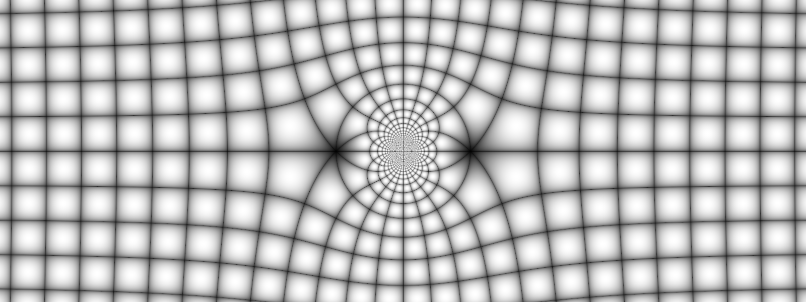

Let $S$ be a set of complex numbers. A function $f$ defined on $S$ is a rule that assigns to each $z$ in $S$ a complex number $w$. The number $w$ is called the value of $f$ at $z$ and is denoted by $f (z)$; that is, $w = f (z)$. The set $S$ is called the domain of definition of $f$.
If only one value of $w$ corresponds to each value of $z$, we say that $w$ is a single-valued function of $z$ or that $f(z)$ is single-valued. If more than one value of $w$ corresponds to each value of $z$, we say that $w$ is a multiple-valued or many-valued function of $z$.
A multiple-valued function can be considered as a collection of single-valued functions, each member of which is called a branch of the function. In general, we consider one particular member as a principal branch of the multiple-valued function and the value of the function corresponding to this branch as the principal value.
Example 1: The function $w=z^2$ is a single-valued function of $z$. On the other hand, if $w=z^{\frac{1}{2}},$ then to each value of $z$ there are two values of $w$. Hence, the function $$w=z^{\frac{1}{2}}$$ is a multiple-valued (in this case two-valued) function of $z$.
Suppose that $w=u+iv$ is the value of a function $f$ at $z= x+iy$, so that $$u+iv=f(x+iy)$$ Each of the real numbers $u$ and $v$ depends on the real variables $x$ and $y$, and it follows that $f(z)$ can be expressed in terms of a pair of real-valued functions of the real variables $x$ and $y$: \begin{eqnarray}\label{eq1} f(z)= u(x,y)+iv(x,y). \end{eqnarray} If the polar coordinates $r$ and $\theta$, instead of $x$ and $y$ , are used, then $$u+iv=f\left(re^{i\theta}\right)$$ where $w=u+iv$ and $z=re^{i\theta}$. In this case, we write \begin{eqnarray}\label{eq2} f(z)=u\left(r, \theta\right)+iv\left(r, \theta\right). \end{eqnarray}
Example 2: If $f(z)= z^2$ then $$f(x+iy)=(x+iy)^2=x^2-y^2+i(2xy).$$ Hence $$u(x,y)= x^2-y^2\quad \text{and}\quad v(x,y)= 2xy.$$ When we use polar coordinates, we have $$u\left(r, \theta\right)= r^2\cos 2\theta \quad \text{and}\quad v\left(r, \theta\right)= r^2\sin 2\theta.$$
Question: What happens when in either of equations (\ref{eq1}) and (\ref{eq2}) the function $v$ always has a value zero?
For $a_n, a_{n-1}, \ldots, a_0$ complex constants we define $$p(z) = a_n z^n + a_{n-1} z^{n-1} +\cdots +a_{1}z + a_0$$ where $a_n\neq 0$ and $n$ is a positive integer called the degree of the polynomial $p(z)$.
Rational functions: Ratios $$\frac{p(z)}{q(z)}$$ where $p(z)$ and $q(z)$ are polynomials and $q(z)\neq 0$.
Exponential function: If $z=x+iy$, the exponential function $e^z$ is defined by writing \begin{eqnarray*} e^z=e^xe^{iy}. \end{eqnarray*} Because \begin{eqnarray*} e^{iy}=\cos y +i\sin y, \end{eqnarray*} then we have \begin{eqnarray*} e^z=e^x\left(\cos y +i\sin y\right). \end{eqnarray*}
In a similar fashion, the complex logarithm is a complex extension of the usual real natural (i.e., base $e$) logarithm. In terms of polar coordinates $z = r e^{i\theta}$, the complex logarithm has the form $$\log z = \log\left(r e^{i\theta}\right) = \log r + \log e^{i\theta}= \log r + i \theta.$$ We will explore in detail this function soon.
The sine and cosine of a complex variable $z$ are defined as follows: \begin{eqnarray*} \sin z=\frac{e^{i z}-e^{-iz}}{2i}\quad \text{and}\quad \cos z=\frac{e^{iz} +e^{-i z}}{2}. \end{eqnarray*} The other four trigonometric functions are defined in terms of the sine and cosine functions with the following relations: \begin{align*} \tan z&=\frac{\sin z}{\cos z} & \cot z&=\frac{\cos z}{\sin z} \\ \sec z&=\frac{1}{\cos z} & \csc z&=\frac{1}{\sin z}. \end{align*}
The hyperbolic sine and the hyperbolic cosine of a complex variable are defined as they are with a real variable; that is, \begin{eqnarray*} \sinh z=\frac{e^{z}-e^{-z}}{2}\quad \text{and}\quad \cosh z=\frac{e^{z} +e^{- z}}{2}. \end{eqnarray*} The other four hyperbolic functions are defined in terms of the hyperbolic sine and cosine functions with the relations: \begin{align*} \tanh z&=\frac{\sinh z}{\cosh z} & \coth z&=\frac{\cosh z}{\sinh z} \\ \text{sech } z&=\frac{1}{\cosh z} & \text{csch } z&=\frac{1}{\sinh z}. \end{align*}
Use the following applet to explore the real and imaginary components of some complex functions
NEXT: Limits